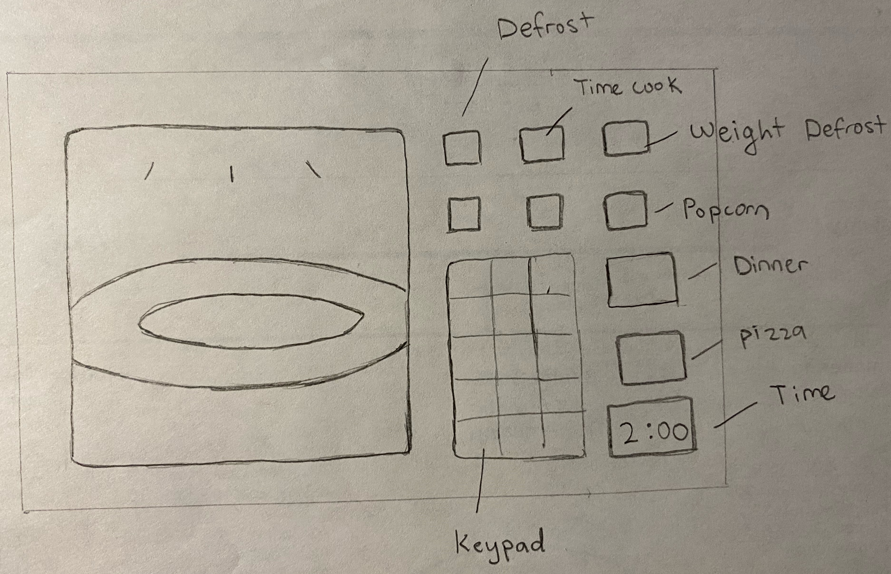
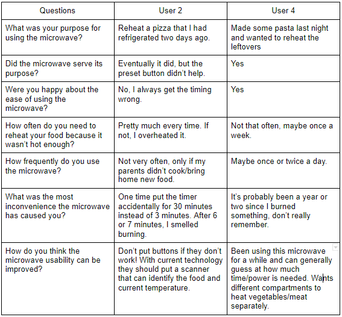
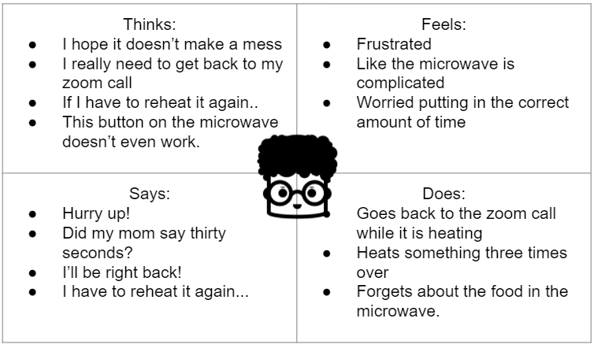
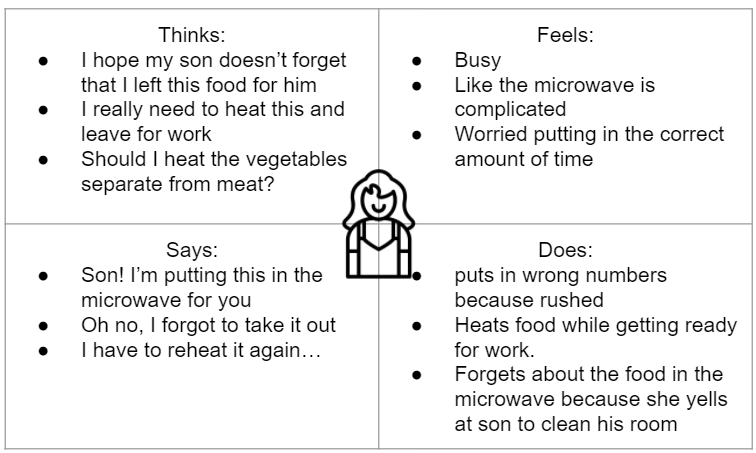
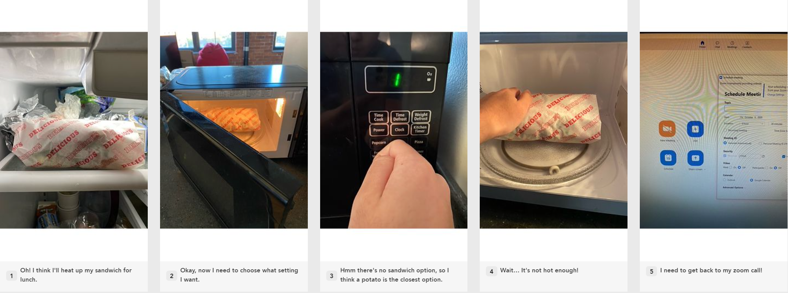
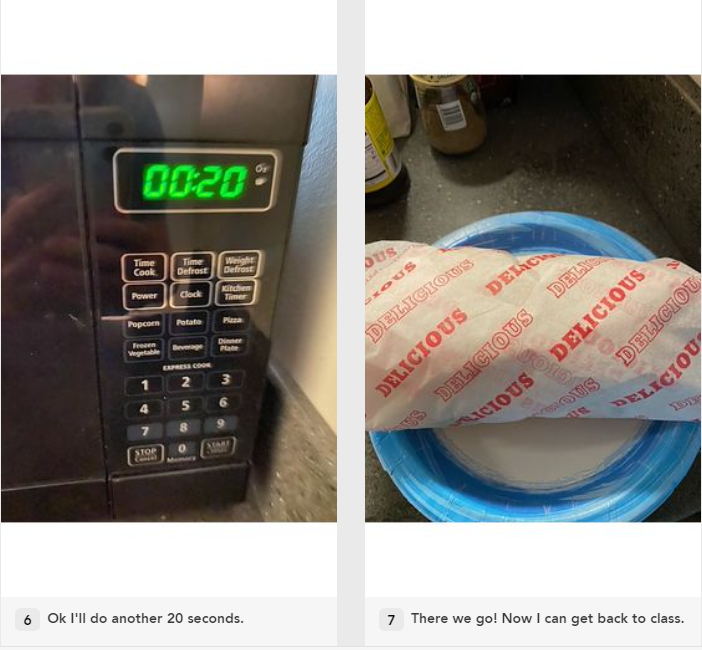

Personas
Interface: Home Microwave

The Microwave is meant to an efficient, simple, multi-task, but exact appliance for heating a wide variety of foods. It should
provide the user with an easy to understand interface that requires minimal focus and thought.
Key Interactive Components:
1. Several buttons with a preset heating function.
2. Keypad to manually input time.
3. Button to open/close door.
4. Time Display
Observations:
User 1:
- Wanted to reheat a sandwich, but there was no preset option
- Tried for one minute because that was fine for a previous noodle dish
- Wasn't warm enough so another minute was needed
- User was a bit frustrated
User 2:
- Had to reheat a pizza from the refrigerator
- Pressed the pizza preset option
- Pizza was way too hot, sizzling, making a mess in the microwave
- User seemed to be upset
User 3:
- Wanted to reheat a steak dinner with rice and vegetables in the bowl as well.
- Chose the weight preset option button
- The vegetables were overheated, rice was perfect, but the steak was not as hot as desired, as the user wanted to eat the steak separately afterwards
- User seemed okay
User 4:
- Wanted to microwave some pasta
- Used manual timer for 2 minutes and 15 seconds
- Dish seemed to make the user happy
Interviews and Questions:

Personas:

Adolescent Andrew is a freshman in high school who is new to reheating his meals at Zoom High. Because of his
tight zoom schedule, he often needs to reheat his food
quickly and get back to the call.
He often tries to use the preset heating buttons such as "pizza" on the microwave, but most of the times it
overheats or underheats his pizza. He also tends to forget his food in the microwave because the alarm only goes
off twice. He has his headphones on so it is easy for him to get lost in lecture, resulting in attempting to reheat all over.
This persona is a good representative of individuals who are new to reheating food with this microwave. He also is a good
example of any individual who is busy and needs to do something while the microwave is heating. This will make the user
angry if more time is needed than necessary.

Mother Mary is middle aged mom who has several kids and is trying to balance work. Now that they are all home for zoom calling
She has to heat all their food while getting ready for work.
She is a little more picky than her son when it comes to reheating food and would like to perfectly heat all components of her meal
She also is very busy and has no time to be confused by the many buttons on the interface. With her children changing the power settings
and no display of the power level, she often messes up her input time and over/underheats her food.
Mother Mary is great to represent the users that are a little bit more experienced and would like a little more from the interface.
She is also representative of users who are in a rush and have other things to do while heating food, especially in the morning.
A unique role she has is that she must heat up food for all of her children and herself.
Storyboard:

